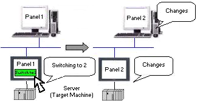

|
|
|
|
|
|
|
|
You can perform Web Gate operations by selecting the Monitoring tab in the Web Server environment. From Web Gate, a user can:
When a target machine and remote PC are synchronized, changing the panel display on the target machine also changes the panel on the remote PC.


When panel synchronization is enabled in Web Gate, the target machine does not synchronize with any panel changes made in the remote PC.
To Synchronize Web Gate to a target machine:
When viewing the target machine through Web Gate, right-click the Web Gate object and select Synchronization from the right-click menu.
You can change the system language on the target and on Web Gate, provided that you have configured more than one system language in the project.
To change the system language on Web Gate:
Synchronize Web Gate to a target.
Right-click the Web Gate object and select System Language.
In the System Language dialog box, select the new system language from the drop-down list.
Click Close.
To change the system language on a target machine, see Section 20.2, Switching Languages.